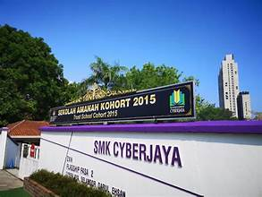

(Pre-University)
Form 6
Sekolah Kebangsaan Cyberjaya

Bachelor's of Information Science (Honours)
Specialization: Information System Management
UNIVERSITI TEKNOLOGI MARA PUNCAK PERDANA
Form 6
Sekolah Kebangsaan Cyberjaya
Specialization: Information System Management
UNIVERSITI TEKNOLOGI MARA PUNCAK PERDANA